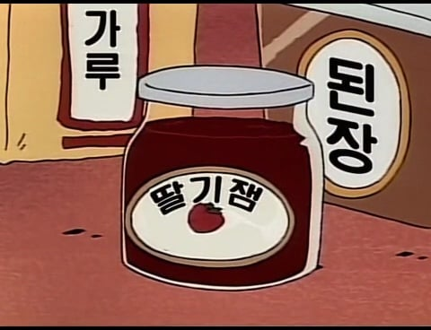

된장을 쳐넣고

딸기잼도 쳐넣고...
국간장...
마요네즈...
우유....
와사비와 겨자....
핫소스...
소금 한 덩어리가 들어가자..
설탕 급히 투하
후추 비스무리한걸 넣고....
밀가루도 쳐넣다가....
괴식 완성됨 ㅅㅂ.....
된장을 쳐넣고

딸기잼도 쳐넣고...
국간장...
마요네즈...
우유....
와사비와 겨자....
핫소스...
소금 한 덩어리가 들어가자..
설탕 급히 투하
후추 비스무리한걸 넣고....
밀가루도 쳐넣다가....
괴식 완성됨 ㅅㅂ.....
댓글
수집 당시 댓글 14개
프리즘 · 17 시간 전
체크레인 · 17 시간 전
짱종원 ㄷㄷ
씨벌지식정보방 · 17 시간 전
오뎅이 들어가지 말라는 법이 있을까?
년차외노자임 · 17 시간 전
카레 만든다고 해놓고 카레를 안넣네
· 코를두번파면코코팜 · 13 시간 전
카레 어떻게 만들어요 물어보니
본고장의 카레는 각종 향신료와 조미료에 밀가루를 섞어서 만든단다 라는 말을 데빌구가 들어버림
· 무선마우스 · 12 시간 전
내가 알기론 카레라면 3개뜯어서 1개먹어버리고 2개만 넣어서 싱거운상태였을꺼임
쀎쀎 · 16 시간 전
우일석맞죠 · 13 시간 전
훈이 마녀사냥해서 짱구 트롤짓 묻으려는세력이있다니까 ㄹㅇ
Byolet · 13 시간 전
대충 여기서 끝이 아니다 댓글
성우위키 · 13 시간 전
https://youtube.com/shorts/3UjGK7XVprM
영상으로보자
· 쀎쀎 · 10 시간 전
함부르크훠궈복싱장 · 13 시간 전
카레를 만들다가 실수로 해애애애앰써는 기계를 사버린거야
피릉피릉 · 13 시간 전
너에겐줄게없구나 · 10 시간 전